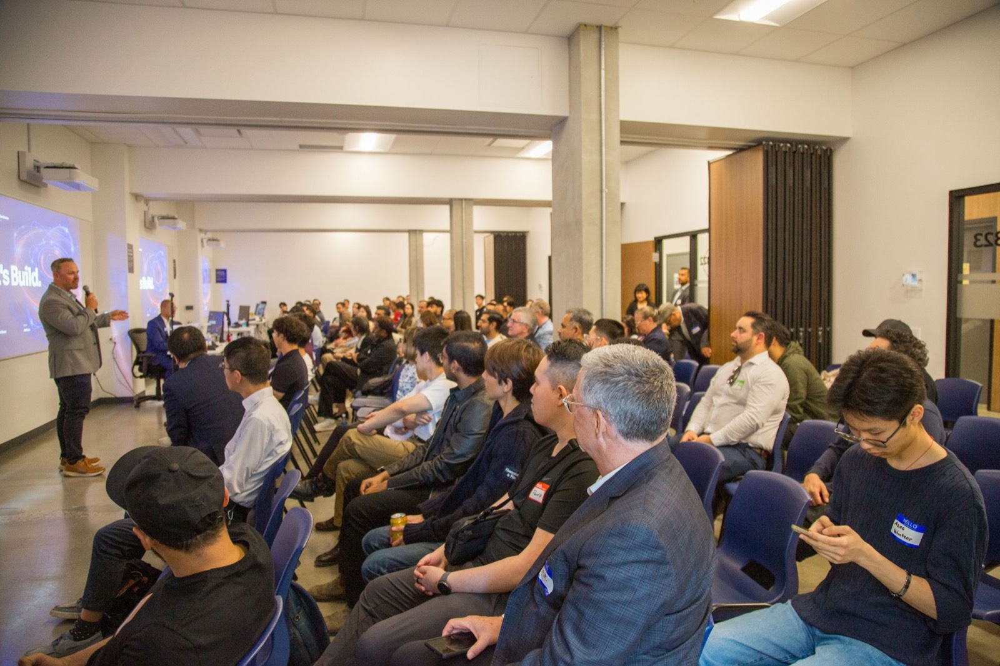

Alexander Innovation Centre
Recap
AI Innovation Night: Strengthening BC's AI Ecosystem. 165 founders, investors, builders, and educators filled 570 Dunsmuir for AIC's inaugural Innovation Night, plus the public debut of ALEBEX AI and four standout talks.
